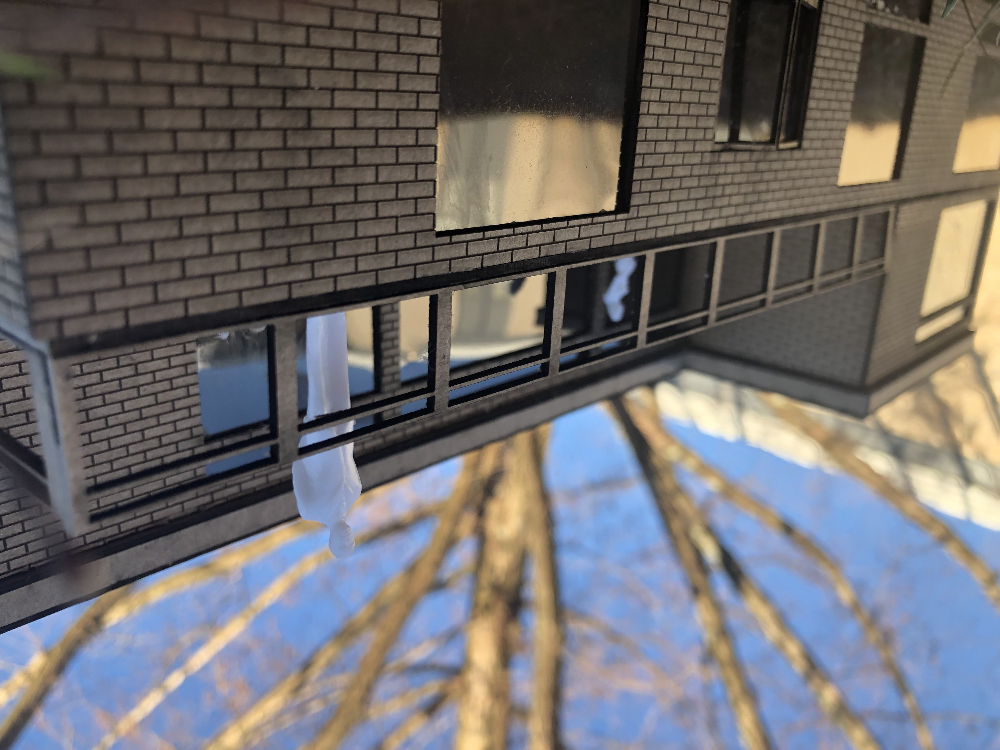
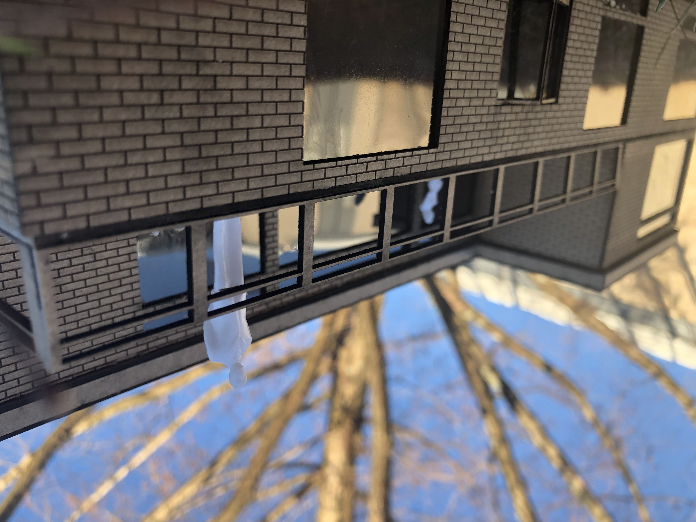
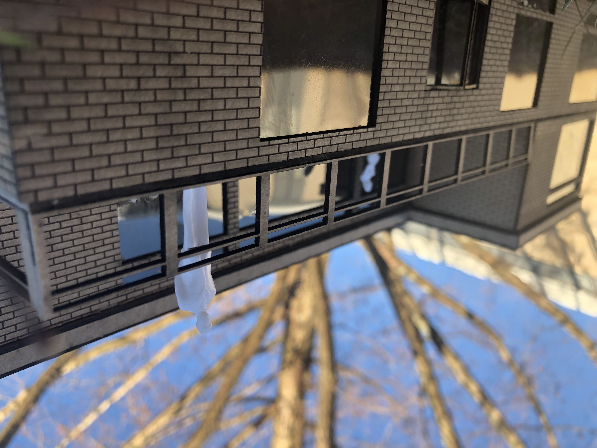
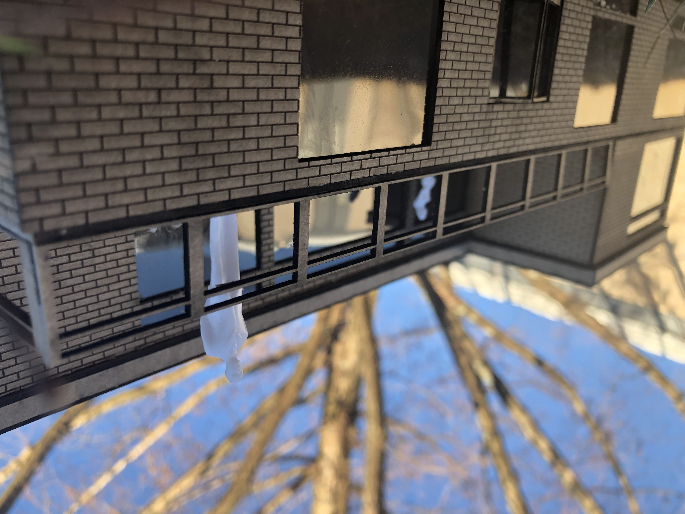

 

This project was really hard to do. First, we had to work with a partner and for me, it wasn't hard to get along with them and to agree on one idea. The one thing that was bad, was that I did a lot of the writing since they weren't good at it. Compared to the last project this one was more stressful because there was an actual criteria we had to follow and it required a whole bunch of different elements to finish it. The main thing that was hard to do was coming up with different ideas because we found one we really liked but still had to find other ideas. It was also hard presenting these ideas and getting our favorite rejected and then having to come up with a whole other idea. We also challenged ourselves by choosing a really old disaster, which meant that we were limited to resources that were available during that time. Not only that, but since our country isn't that developed we were even more limited on resources. We had to go through many variations of the same idea because of our small supply on resources. Overall this project was exciting to do and I hope I survive the rest.
The concept of my structure is based on a really cool shell that I found a picture of on the internet. Since it's a shell I decided that it would be an aquarium called the “Shell Shock Aquarium” since shell shock is a term used during World War 1 to describe PTSD before PTSD had a name an aquarium would be perfect. During my research I found out that aquariums are actually proven to calm you down by lowering stress, anxiety, blood pressure, and heart rate. In addition to that, aquariums also help relieve muscle tension and symptoms of Alzheimer's, which makes them perfect for elders and veterans. Aquariums also help children with learning and developmental challenges. So, besides it being just a regular aquarium for a day out with your family, my aquarium will also provide tours, classes, and activities for elders and children who need a little extra help to relax and learn. My idea is for the structure to be located near homes for senior citizens and/or hospitals so that senior citizens, children, and people who can’t get very far from the hospital can easily get there. It also gives the elderly and patients a chance to interact with the public, since a lot of them don't usually get contact to the outside world besides their families. Since, the structure is going to be helpful to elders and hospital patients, it will also provide ramps and elevators to accommodate them, it’ll also be helpful for parents with a stroller. “Shell Shock” Aquarium will be a helpful place for everyone’s individual needs.
Tasked to learn SketchUp and design a chair and a simple emergency shelter. First time using the program.